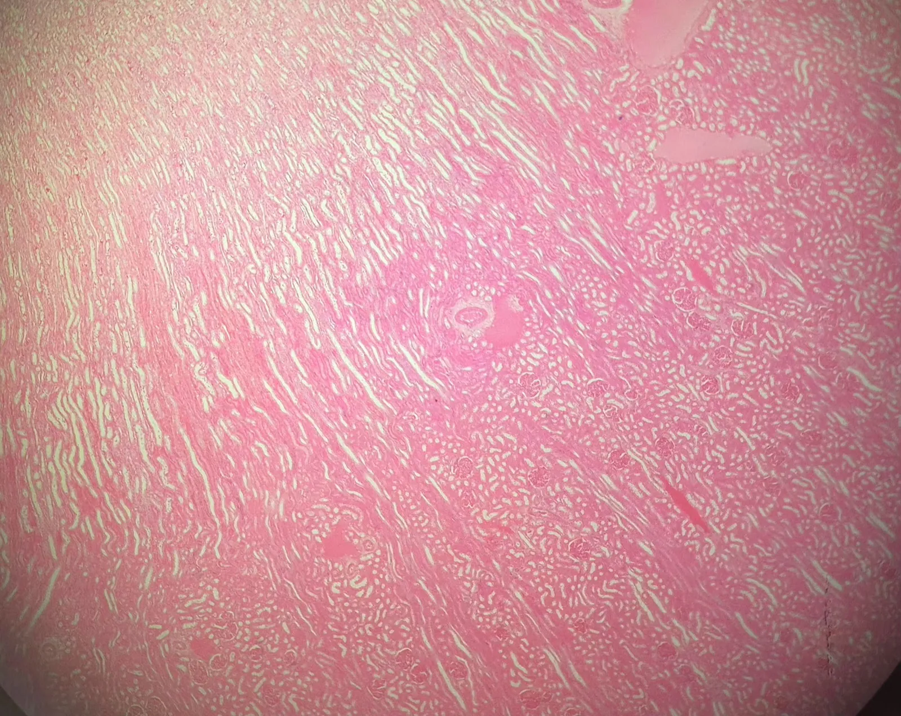
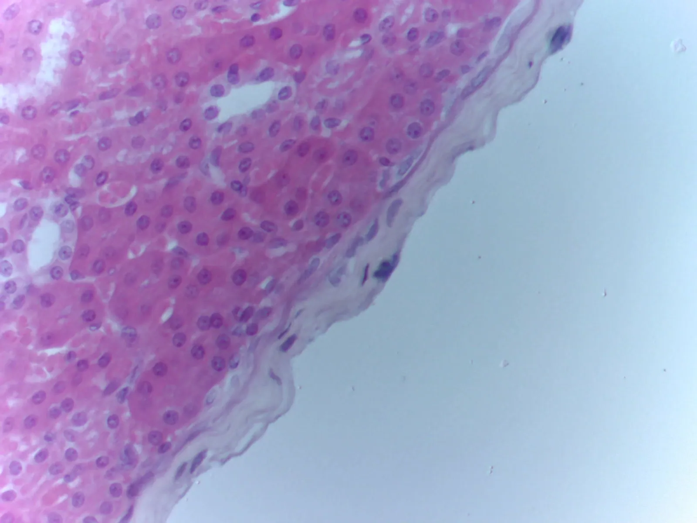
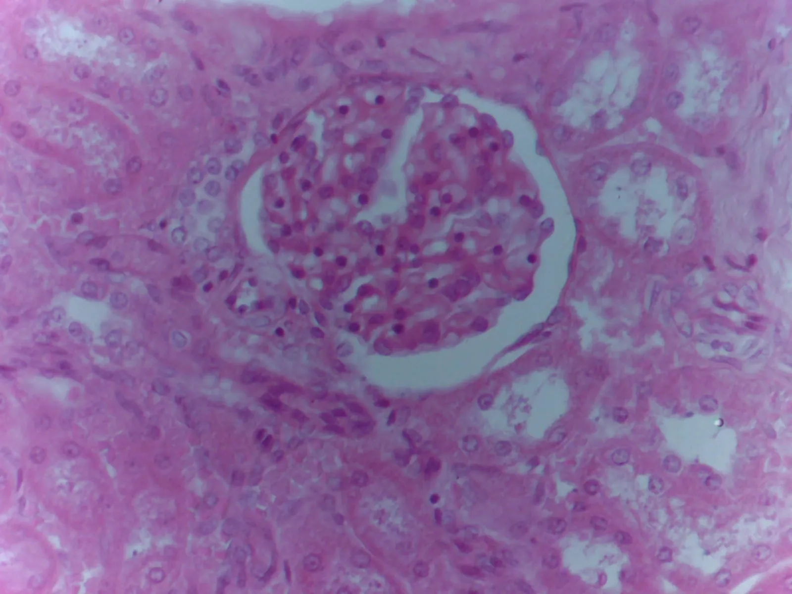
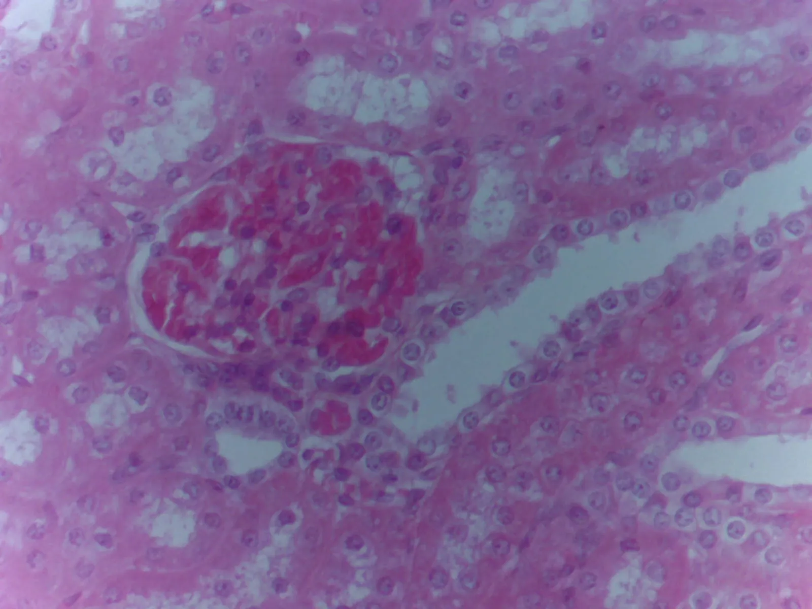
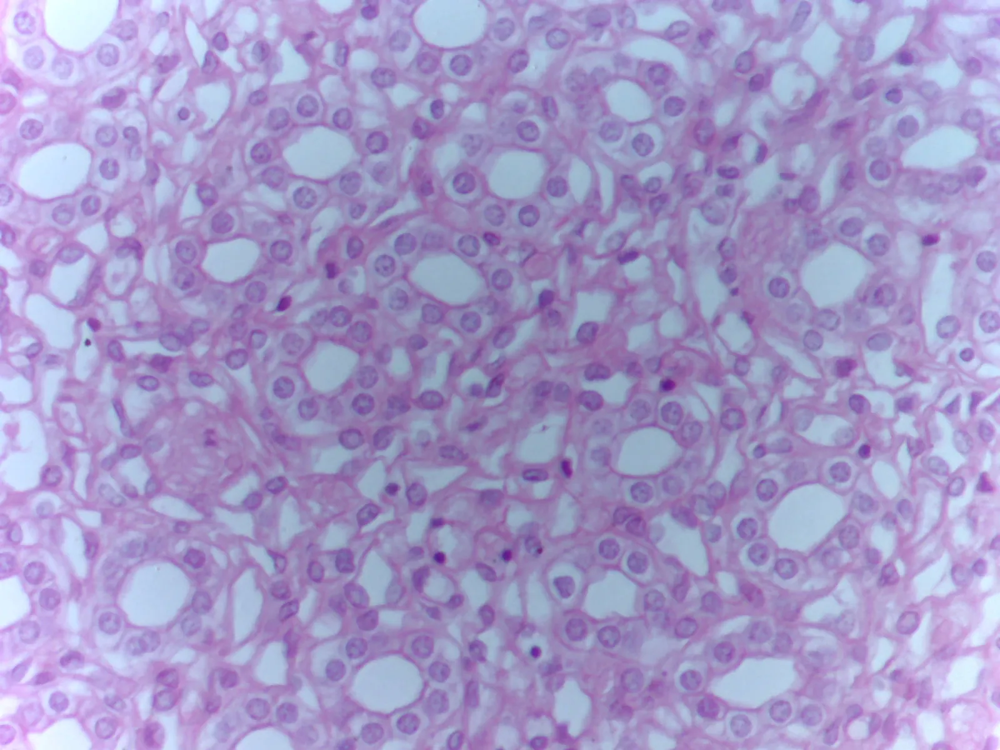
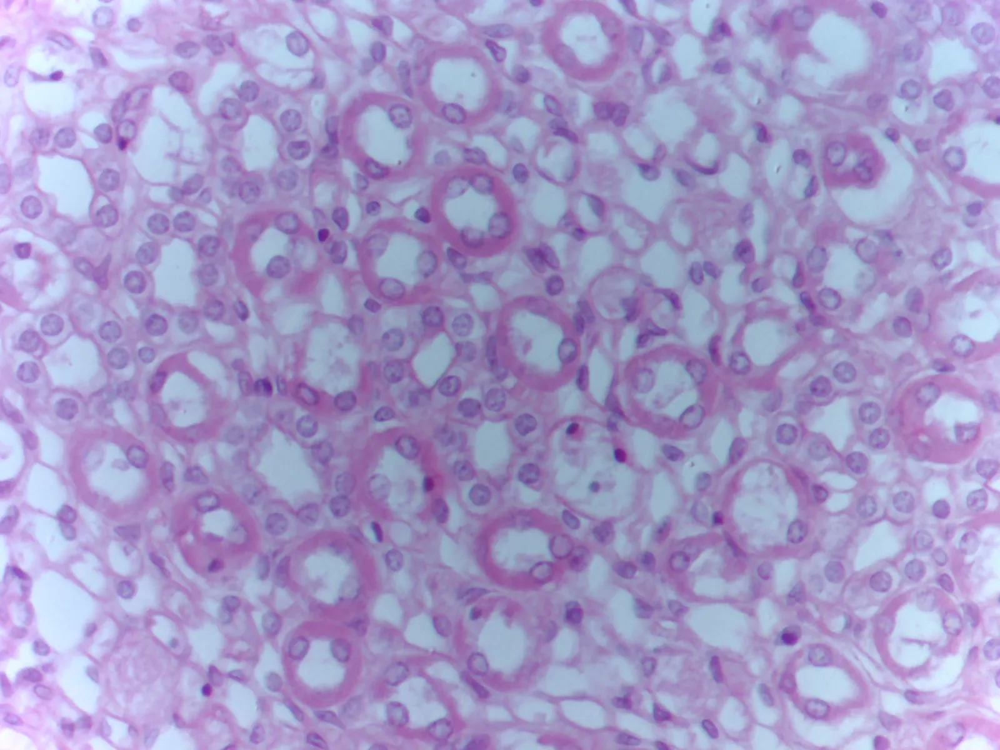

Lâmina 63 e 64 · Sistema urinário
Rim






Toque na imagem para ampliar. No computador, use as setas do teclado para trocar de imagem.
Lâmina 63 e 64 · Sistema urinário






Toque na imagem para ampliar. No computador, use as setas do teclado para trocar de imagem.